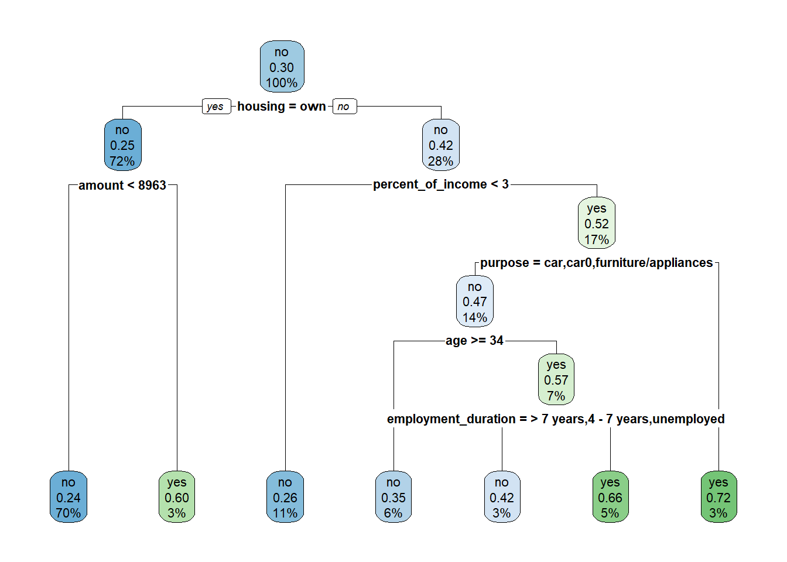
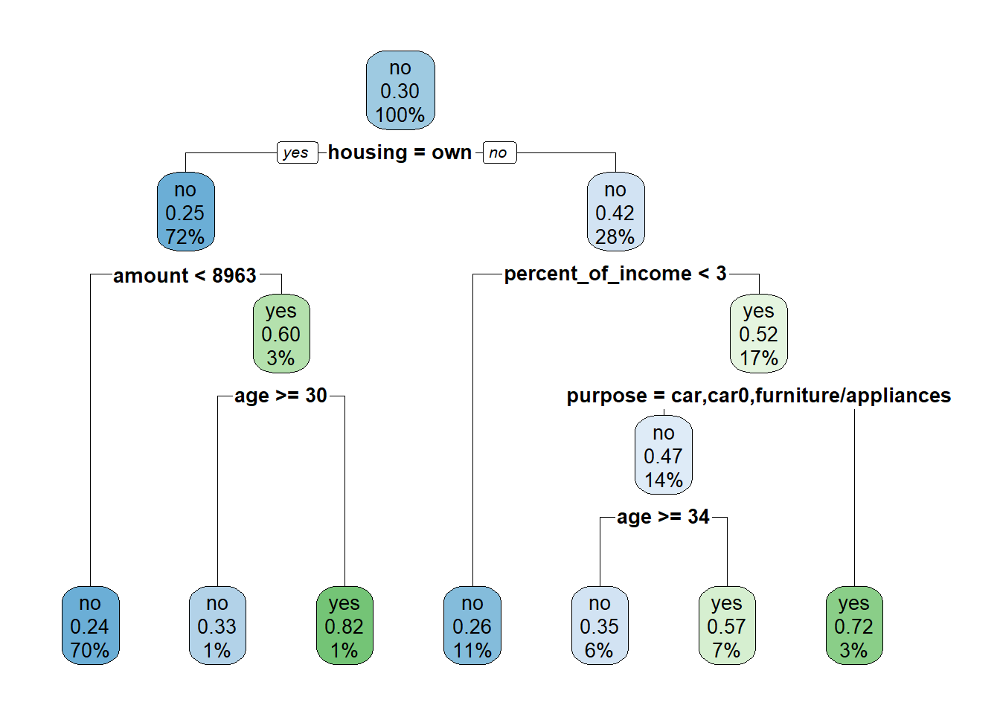
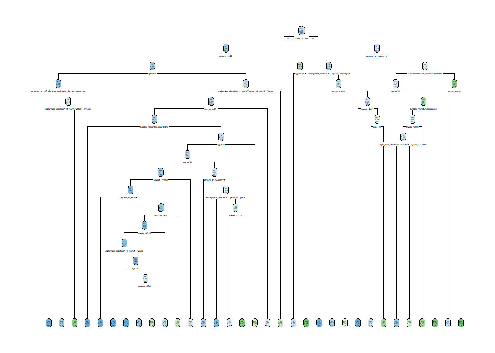
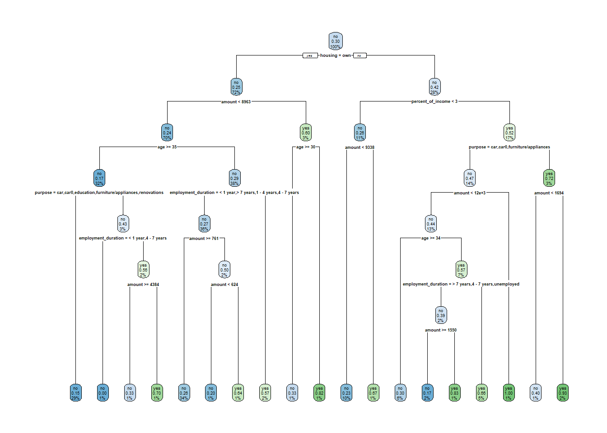

library(tidyverse) # datahåndtering, grafikk og glimpse()
library(skimr) # funksjonen skim() for å se på data
library(rsample) # for å dele data i training og testing
library(rpart) # funksjoner for CART
library(rpart.plot) # funksjon for å plotte CART
library(caret) # inneholder funksjon for confusion matrix 5 Klassifikasjonstrær
I dette kapittelt skal vi bruke følgende pakker:
Vi skal her bruke datasettet credit fra Canvas. Dataene er en banks kundehistorikk for kreditt for 1000 kunder. Variabelen default1 er «yes» hvis tilbakebetaling som avtalt og «no» hvis ikke. Dette er utfallsvariabelen. Øvrige variable er rimelig selvforklarende etter variabelnavn. Målet er å lage et system for hvilke nye kunder som skal få innvilget kreditt.
Code
credit <- read.csv("../data/credit.csv", stringsAsFactors = TRUE)
skim(credit)| Name | credit |
| Number of rows | 1000 |
| Number of columns | 17 |
| _______________________ | |
| Column type frequency: | |
| factor | 10 |
| numeric | 7 |
| ________________________ | |
| Group variables | None |
Variable type: factor
| skim_variable | n_missing | complete_rate | ordered | n_unique | top_counts |
|---|---|---|---|---|---|
| checking_balance | 0 | 1 | FALSE | 4 | unk: 394, < 0: 274, 1 -: 269, > 2: 63 |
| credit_history | 0 | 1 | FALSE | 5 | goo: 530, cri: 293, poo: 88, ver: 49 |
| purpose | 0 | 1 | FALSE | 6 | fur: 473, car: 337, bus: 97, edu: 59 |
| savings_balance | 0 | 1 | FALSE | 5 | < 1: 603, unk: 183, 100: 103, 500: 63 |
| employment_duration | 0 | 1 | FALSE | 5 | 1 -: 339, > 7: 253, 4 -: 174, < 1: 172 |
| other_credit | 0 | 1 | FALSE | 3 | non: 814, ban: 139, sto: 47 |
| housing | 0 | 1 | FALSE | 3 | own: 713, ren: 179, oth: 108 |
| job | 0 | 1 | FALSE | 4 | ski: 630, uns: 200, man: 148, une: 22 |
| phone | 0 | 1 | FALSE | 2 | no: 596, yes: 404 |
| default | 0 | 1 | FALSE | 2 | no: 700, yes: 300 |
Variable type: numeric
| skim_variable | n_missing | complete_rate | mean | sd | p0 | p25 | p50 | p75 | p100 | hist |
|---|---|---|---|---|---|---|---|---|---|---|
| months_loan_duration | 0 | 1 | 20.90 | 12.06 | 4 | 12.0 | 18.0 | 24.00 | 72 | ▇▇▂▁▁ |
| amount | 0 | 1 | 3271.26 | 2822.74 | 250 | 1365.5 | 2319.5 | 3972.25 | 18424 | ▇▂▁▁▁ |
| percent_of_income | 0 | 1 | 2.97 | 1.12 | 1 | 2.0 | 3.0 | 4.00 | 4 | ▂▃▁▂▇ |
| years_at_residence | 0 | 1 | 2.85 | 1.10 | 1 | 2.0 | 3.0 | 4.00 | 4 | ▂▆▁▃▇ |
| age | 0 | 1 | 35.55 | 11.38 | 19 | 27.0 | 33.0 | 42.00 | 75 | ▇▆▃▁▁ |
| existing_loans_count | 0 | 1 | 1.41 | 0.58 | 1 | 1.0 | 1.0 | 2.00 | 4 | ▇▅▁▁▁ |
| dependents | 0 | 1 | 1.16 | 0.36 | 1 | 1.0 | 1.0 | 1.00 | 2 | ▇▁▁▁▂ |
Vi splitter først datasettet i to deler: en til training og en til testing.
Code
set.seed(42)
training_init <- initial_split(credit)
training <- training(training_init)
testing <- testing(training_init)Vi starter med å inkludere noen få variable som gir en oversiktlig illustrasjon. Utfallsvariabel og prediktorer spesifiseres som en formel på samme måte som for regresjon. Siden vi her har en klassifikasjon må vi spesifisere method = "class". Hvis ikke vil rpart() gjette hva slags modell (som kanskje er riktig), så du kan få andre resultater enn du forventet.
Code
credit_tree <- rpart(default ~ age + amount + percent_of_income + purpose + employment_duration + housing,
data=training, method="class")Resultatet kan fremstilles grafisk med funksjonen rpart.plot() slik:
Code
rpart.plot(credit_tree)
Vi kan også få printet ut resultatet som tall i en tabell.2
Code
rpart.rules(credit_tree, extra=4) default no yes
no [.86 .14] when housing is other or rent & amount < 2492 & age >= 34 & percent_of_income >= 3 & purpose is car or car0 or furniture/appliances
no [.76 .24] when housing is own & amount < 8963
no [.74 .26] when housing is other or rent & percent_of_income < 3
no [.71 .29] when housing is other or rent & amount >= 2492 & age is 34 to 39 & percent_of_income >= 3 & purpose is car or car0 or furniture/appliances
no [.67 .33] when housing is own & amount >= 8963 & age >= 30
no [.62 .38] when housing is other or rent & amount < 2094 & age < 34 & percent_of_income >= 3 & purpose is furniture/appliances
yes [.37 .63] when housing is other or rent & amount >= 2492 & age >= 39 & percent_of_income >= 3 & purpose is car or car0 or furniture/appliances
yes [.35 .65] when housing is other or rent & amount >= 2094 & age < 34 & percent_of_income >= 3 & purpose is furniture/appliances
yes [.28 .72] when housing is other or rent & percent_of_income >= 3 & purpose is business or education or renovations
yes [.25 .75] when housing is other or rent & age < 34 & percent_of_income >= 3 & purpose is car
yes [.18 .82] when housing is own & amount >= 8963 & age < 30 Da kan vi sammenligne prediksjoner med observert utfall for trainingdataene på tilsvarende måte som før. I predict() må det angis type = "class" for å spesifisere at det skal være klassifikasjon. Hvis ikke får man en slags sannsynlighet.
Code
training_pred <- training %>%
mutate(default_pred = predict(credit_tree, type="class"))Vi kan så skrive ut confusion matrix.
Code
tab <- training_pred %>%
select(default_pred, default) %>%
table()
tab default
default_pred no yes
no 502 160
yes 26 62Så kan vi få regnet ut alle de standardmålene slik vi har gjort før:
Code
confusionMatrix(tab)Confusion Matrix and Statistics
default
default_pred no yes
no 502 160
yes 26 62
Accuracy : 0.752
95% CI : (0.7195, 0.7825)
No Information Rate : 0.704
P-Value [Acc > NIR] : 0.001974
Kappa : 0.2788
Mcnemar's Test P-Value : < 2.2e-16
Sensitivity : 0.9508
Specificity : 0.2793
Pos Pred Value : 0.7583
Neg Pred Value : 0.7045
Prevalence : 0.7040
Detection Rate : 0.6693
Detection Prevalence : 0.8827
Balanced Accuracy : 0.6150
'Positive' Class : no
Men ovenfor har vi altså brukt training-data. Når man er fornøyd med modellen er derimot testing-data som gir indikasjon på hvor godt modellen fungerer.
Code
testing_pred <- testing %>%
mutate(default_pred = predict(credit_tree, newdata=testing, type="class"))
tab <- testing_pred %>%
select(default_pred, default) %>%
table()
tab default
default_pred no yes
no 157 63
yes 15 15Code
confusionMatrix(tab)Confusion Matrix and Statistics
default
default_pred no yes
no 157 63
yes 15 15
Accuracy : 0.688
95% CI : (0.6266, 0.7449)
No Information Rate : 0.688
P-Value [Acc > NIR] : 0.5306
Kappa : 0.1263
Mcnemar's Test P-Value : 1.028e-07
Sensitivity : 0.9128
Specificity : 0.1923
Pos Pred Value : 0.7136
Neg Pred Value : 0.5000
Prevalence : 0.6880
Detection Rate : 0.6280
Detection Prevalence : 0.8800
Balanced Accuracy : 0.5525
'Positive' Class : no
5.1 Tuning/pruning
Vi har vært inne på tidligere at vi kan styre hvordan algoritmen fungerer. Det er noen parametres om styrer prosessen, og disse kan vi justere. Her tar vi for oss de viktiste, men det finnes flere.
Kort fortalt styrer disse parametrene hvor komplekse trærne kan bli. Husk nå fra tidligere kapittel: mer kompleks modell gir bedre tilpassning til trainingdata - men kan gi dårligere tilpassning til testingdata. Målet er altså å finne en slags balansert kompleksitet. Med klassifikasjonstrær påvirker vi dette mer direkte enn ved regresjonsmodeller.
Nå er arbeidsflyten slik at man skrur litt på disse parametrene, sjekker resultatet og justerer på nytt og sjekker… osv. Da er det viktig at bruker trainingdata! Ikke bruke testingdata før du er rimelig fornøyd med resultatet. Først da bruker du testingdata.
5.1.1 Bruk av minsplit = ...
Parameteren minsplit kontrollerer det miste antallet observasjoner som kan være i en node for at en ny split skal testes. Hvis det blir for få observasjoner i en node, så stopper splitten der. Forvalget for denne parameteren er 20, så hvis f.eks. en node har 19 observasjoner, så stopper forgreningen der.
Her er et eksempel for å illustrere. Ved å sette minsplit = 50, som en god del høyere enn forvalget på 20, vil man få et mindre komplekst tre.
Code
credit_tree <- rpart(default ~ age + amount + percent_of_income + purpose + employment_duration + housing,
data=training, method="class", minsplit = 50)
rpart.plot(credit_tree)
5.1.2 Bruk av minbucket = ...
Parameterne minbucket = ... styrer hvor mange observasjoner det minst må være i den siste noden. Forvalget er en 1/3 av minsplit, altså 7 hvis man ikke har endret på minsplit. Hvis man endrer minsplit, så endres minbucket også automatisk. Men du kan altså også styre minbucket direkte også.
Dette ligner på hva minsplit gjør, men mens minsplit kan godt splitte en node med 20 i to grupper med 1 og 19, så vil minbucket ikke tillate en ny split med mindre den ene gruppen har minst 7.
Her er et eksempel der det er satt minbucket = 15. Det skaper et mindre komplekst tre, og et lavere tall ville kunne gi et mer komplekst tre. Men det er andre valg som også spiller inn (forvalgte sådan) slik at du ikke nødvendigvis får et veldig mye mer komplisert tre ved å angi en lav verdi.
Code
credit_tree <- rpart(default ~ age + amount + percent_of_income + purpose + employment_duration + housing,
data=training, method="class", minbucket = 15)
rpart.plot(credit_tree)5.1.3 Bruk av maxdepth = ...
Parameteren maxdepth setter rett og slett en grense for hvor mange splitter det kan gjøres i hver forgrening. Her er et eksempel der dybden på treet settes til maks 4 og treet får da altså ingen flere forgreininger etter det.
Code
credit_tree <- rpart(default ~ age + amount + percent_of_income + purpose + employment_duration + housing,
data=training, method="class", maxdepth = 4)
rpart.plot(credit_tree)
5.1.4 Bruk av cp = ...
cp er complexity parameter som setter et krav på hvor mye hver split skal bidra til modellens tilpassning til data. Hvis en enkelt split ikke bidrar med mer enn dette, så stopper det der. Her angir du et tall mellom 0 og 1, der 0 er å tillate mest mulig split. Forvalget er 0.01. Her er et eksempel med tillate mest mulig compleksitet, så setter cp til et veldig lavt tall slik at denne restriksjonen blir tilnærmet borte.
Code
credit_tree <- rpart(default ~ age + amount + percent_of_income + purpose + employment_duration + housing,
data=training, method="class", cp = .00001)
rpart.plot(credit_tree)
5.1.5 Sette delene sammen
Du kan så kombinere disse parametrene. Eller: du kan faktisk ikke unngå å kombinere dem, for alle har forvalgte verdier. Det betyr at hvis du ikke justerer på dem, så bruker du jo de forvalgte. Forskjellen er bare om du har tatt et eksplisitt valg eller overlater det hele til softwaren. Når det er sagt er jo de forvalgte verdiene ikke helt dumme.
Du har sett at cp kan gi veldig komplekse trær, og du må være innstilt på at dette skaper overfitting. Det kan være at klassifikasjonstreet ditt i stor grad fanger opp støy, så et for lavt cp er neppe lurt. Men du kan f.eks. sette cp lavt og justere med de andre parametrene. Du har nå altså en del verktøy tilgjengelig for å styre resultatet. Altså i tillegg til å velge hvilke variable du tar med i modellen i utgangspunktet.
Her er et eksempel der alle ovennevnte parametere er angitt. Merk at dette ikke nødvendigvis er et spesielt godt tre, men er for illustrasjonens skyld. Du kan selv prøve deg frem og se hvordan resultatet endres når du justerer de enkelte parametrene.
Code
credit_tree <- rpart(default ~ age + amount + percent_of_income + purpose + employment_duration + housing,
data=training, method="class",
cp = .005, minbucket = 5, minsplit = 10, maxdepth = 7)
rpart.plot(credit_tree)
5.1.6 Pruning
En relatert teknikk er å beskjære treet basert på cp. Altså, når du har bygget et tre som du tenker er for komplekst, så kan du beskjære grenene slik at de minst viktige grenene kuttes. Algoritmen starter da nederst og kutter steg for steg til et mindre komplekst tre.3 Funksjonen prune() gjør jobben, og du må angi et tidligere bygget tre som første argument og deretter en angitt verdi for cp.
Her er et eksempel der forrige tre beskjæres med en høyere verdi for cp.
Code
pruned_credit_tree <- prune(credit_tree, cp = .015)
rpart.plot(pruned_credit_tree)Men altså: det er ikke meningen at man skal rote rundt på måfå med disse justeringene! Det vil nok være lurt å starte med forvalgte verdier, sjekke resultatet og så se om man ønsker justere noe. Det kan være for å bedre “accuracy” eller et annet mål basert på confusion matrix.
5.2 Asymetriske kostnader med loss matrix med cost = ...
Loss matrix er forklart nøyere hos (Berk 2016) og krever litt innsats å venne hodet til å forstå. Utgangspunktet er følgende matrise for om observasjoner er klassifisert rett eller feil.
\[ loss = \begin{bmatrix} TN & FN \\ FP & TP \end{bmatrix} \]
Hver posisjon i matrisen kan gis et tall. Forvalget i rpart() er å vekte alle disse utfallene likt og da ser matrisen slik ut: \[
loss = \begin{bmatrix}
0 & 0 \\
0 & 0
\end{bmatrix}
\] Tallene angir vekter i følgende rekkefølge i øverste rad: sanne negative, falske negative, og i nederste rad: falske positive og sanne positive. Altså som angitt over.
Vi setter alltid vektingen av sanne positive og sanne negative til 0. Det er feilene som evt. skal vektes. Første steg er dermed å velge hvordan man vil vekte utfallet. La oss si at vi ønsker å angi at falske positive skal veie tyngre enn falske negative, med en faktor på 4 kan det gjøres ved å spesifisere matrisen som følger:
\[ loss = \begin{bmatrix} 0 & 1 \\ 4 & 0 \end{bmatrix} \]
I R gjør vi dette ved å lage en matrise. Rekken med tall angis fra øvre venstre hjørne og mot høye, og så samme fra nedre venstre hjørne. Matrisen lagres i et eget objekt, som jeg her har kalt for lossm.
Code
lossm <- matrix(c(0, 4, 1, 0), ncol=2)
lossm [,1] [,2]
[1,] 0 1
[2,] 4 0Nå kan loss matrisen angis i rpart() som et element under parms = ....
Code
rpart_loss <- rpart(default ~ . ,
data = training,
parms=list(loss = lossm),
method = "class")Da kan man se på resultatet igjen på samme måte som før.
Code
rpart.plot(rpart_loss)5.3 Fairness omigjen
Nå er jo algoritmen endret, så confusion matrix er også endret. Da vil nødvendigvis mål på fairness ha endret seg også. Dette bør sjekkes, og evt gå tilbake og justere modellen igjen på ulike måter og sjekke igjen.
5.4 Tester justert modell med testingdata
Så er ringen sluttet: Nå du tror du har endet opp med en god algoritme, så er det på tide å sjekke mot testingdata. Da får du så en mer realistisk forståelse av hvordan resultatene vil slå ut for nye data.
Code
testing_pred <- testing %>%
mutate(default_pred = predict(rpart_loss, newdata=testing, type="class"))
tab <- testing_pred %>%
select(default_pred, default) %>%
table()
confusionMatrix(tab)Confusion Matrix and Statistics
default
default_pred no yes
no 77 13
yes 95 65
Accuracy : 0.568
95% CI : (0.5041, 0.6303)
No Information Rate : 0.688
P-Value [Acc > NIR] : 1
Kappa : 0.2183
Mcnemar's Test P-Value : 6.48e-15
Sensitivity : 0.4477
Specificity : 0.8333
Pos Pred Value : 0.8556
Neg Pred Value : 0.4063
Prevalence : 0.6880
Detection Rate : 0.3080
Detection Prevalence : 0.3600
Balanced Accuracy : 0.6405
'Positive' Class : no
5.5 Oppgaver
Exercise 5.1 Gjenta oppgave 1, men basert på dine vurderinger i e) se om du klarer å tune modellen mer i retning av ønsket cost-ratio. Bruk argumentene prior, cp, minbucket og maxdepth.
Bruk datasettet credit til å predikere kredittverdighet for nye kunder.
- Spesifiser en formel med et fåtall variable og lag et klassifikasjonstre.
- Plot med rpart.plot()
- Bruk predict() til å klassifisere.
- Lag en confusion matrix med table()
- Gi en vurdering av resultatet.
- Si noe om forholdet mellom resultat for training og testing datasett.
- Er cost-ratio ok fra bankens perspektiv?
- Er cost-ratio ok fra kundens perspektiv?
- Andre hensyn som bør spille inn her?
Datafilen credit_kunder.csv inneholder data om to lånesøkere: Ola Normann og Kari Hansen.
Skal banken gi dem lån? Bruk foretrukne modell fra forrige oppgave.
Banker bruker slike systemer i dag i større eller mindre grad til automatisere behandling av lånesøknader. (Men de bruker både rikere data og mer avanserte algoritmer). I hvilken grad synes du slike systemer kan/bør helautomatiseres? Bør det være reguleringer på hva slags data som benyttes til slike systemer? Bør kunden få innsyn i algoritmen ved avslag? Gi noen vurderinger av mulige fordeler og ulemper med tanke på hvordan det kan slå ut for enkeltindivider.
Begrepet “default” på engelsk kan bety å ikke holde en forpliktelse, men i software kan det bety forhåndsvalg. Dette kan være forvirrende akkurat her. Du kan godt endre variabelnavnet hvis du vil.↩︎
Argumentet
extra = 4brukes for klassifikasjonstrær for å få andel i hver gruppe per node.↩︎For vanlig lineær regresjon gjorde vi noe tilsvarende: automatisk seleksjon av variable etter hvor viktige de var for tilpassningen. Dette er en tilsvarende type logikk.↩︎